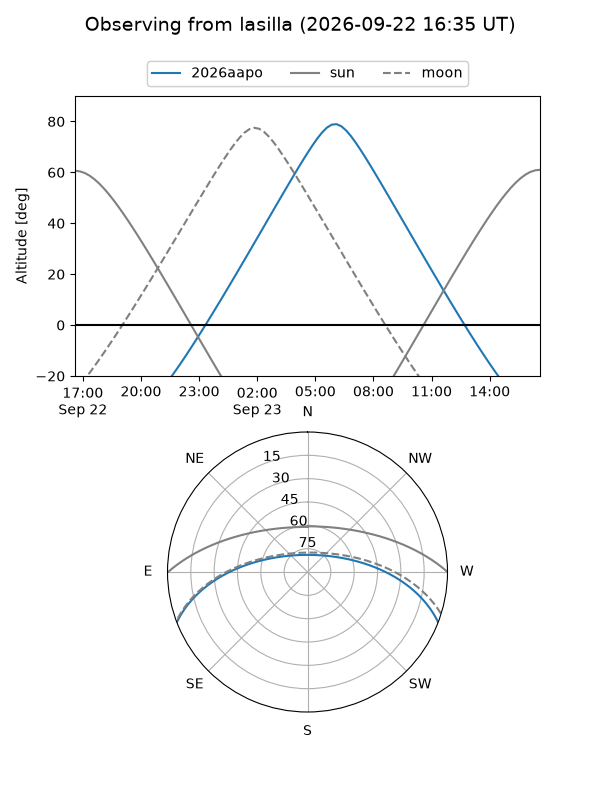
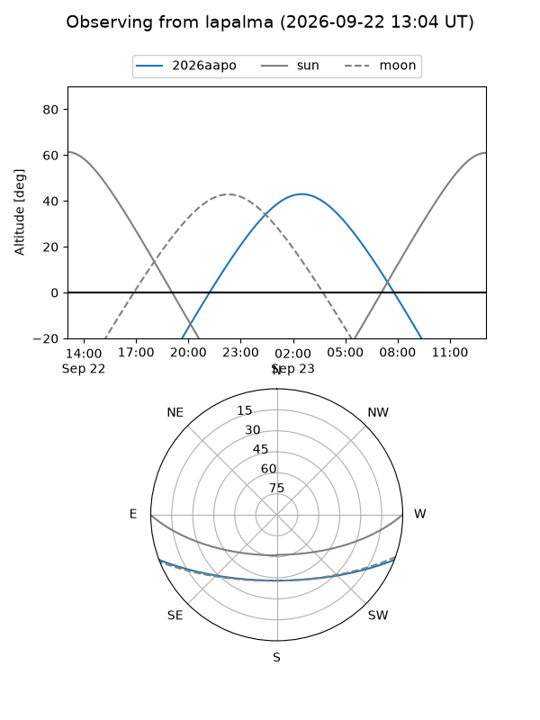
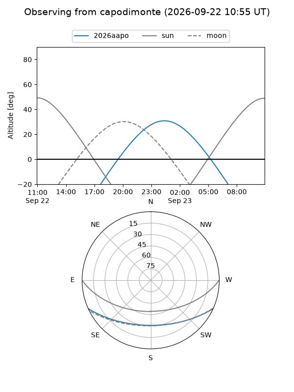
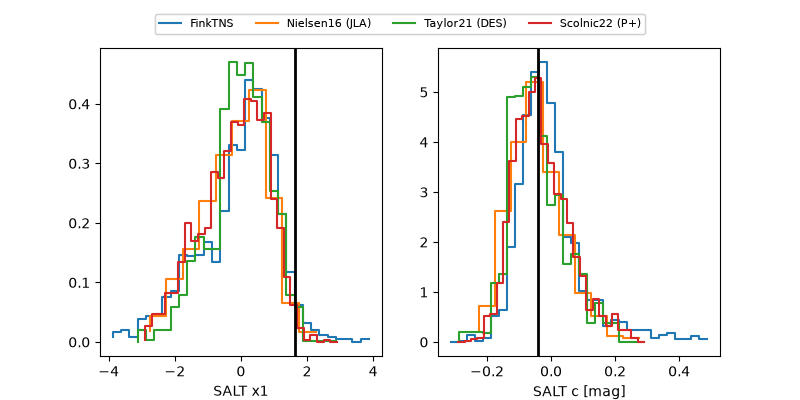

2026aapo
Target 2026aapo at 2026-09-23 02:10
Aliases and brokers:
FINK-ZTF: ztf.fink-portal.org/ZTF26abrurnm
Lasair-ZTF: lasair-ztf.lsst.ac.uk/objects/ZTF26abrurnm
ALeRCE-ZTF: alerce.online/object/ZTF26abrurnm
YSE-PZ: ziggy.ucolick.org/yse/transient_detail/2026aapo
TNS name: wis-tns.org/object/2026aapo
Direct TNS query: direct search
alt names
ZTF26abrurnm (ztf,fink_ztf)
2026aapo (tns,yse)
PS26hol (panstarrs)
Coordinates:
equatorial (ra, dec) = 21.2843,-18.39120
equatorial (HMS+DMS) = 01:25:08.22,-18:23:28.31
galactic (l, b) = (166.2905,-78.31689)
Flags:
TNS type: nan
peak dt: +15.0
Photometry:
last atlasc=19.66, ztfg=19.72, ztfr=19.90
1 atlasc, 7 ztfg, 8 ztfr detections
Lightcurve
Visibility



Additional plots
